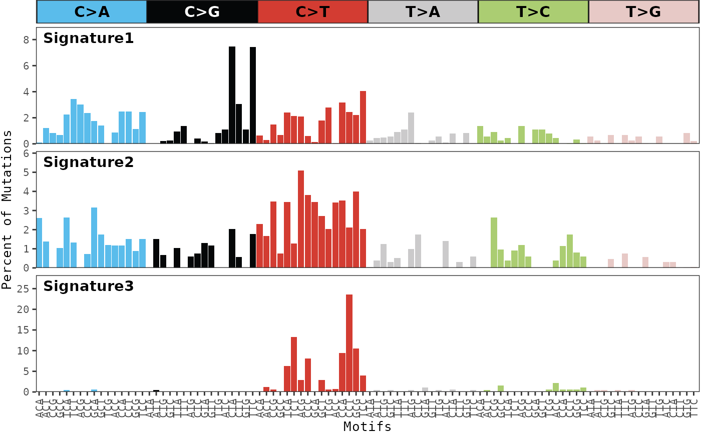

After mutational signature discovery has been performed, this function
can be used to display the distribution of each mutational signature. The
color_variable and color_mapping parameters can be used
to change the default color scheme of the bars.
plot_signatures( result, legend = TRUE, plotly = FALSE, color_variable = NULL, color_mapping = NULL, text_size = 10, facet_size = 10, show_x_labels = TRUE, same_scale = TRUE )
| result | A |
|---|---|
| legend | If |
| plotly | If |
| color_variable | Name of the column in the variant annotation data.frame
to use for coloring the mutation type bars. The variant annotation data.frame
can be found within the count table of the |
| color_mapping | A character vector used to map items in the
|
| text_size | Size of axis text. Default |
| facet_size | Size of facet text. Default |
| show_x_labels | If |
| same_scale | If |
Generates a ggplot or plotly object
